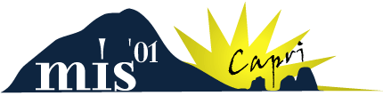

|
 |
|||
|
WORKSHOP
ON MULTIMEDIA INFORMATION SYSTEMS |
|||
| mis2001@cs.rpi.edu | |||
|
Important
Dates:
Workshop
General Chairs:
Workshop
Program Chairs:
Organizing
Committee:
Steering
Committee:
|
||
|
TRAVEL INFORMATION For more detailed information, please visit CapriWeb To Capri from Naples: The isle of Capri is reachable by ferries (75 minutes) and hydrofoils (45 minutes) leaving from Naples all year long. In Naples there are two ports: the main one is Molo Beverello, near city centre and lying below the Angevin Castle, from where leave both ferries and hydrofoils, and the other one of Mergellina, from where leave only hydrofoils, near the train station of Napoli Mergellina. You can visit
the Travel companies websites and see timetable (in Italian) at: Hydrofoils:
You can buy tickets directly at the companies' offices inside the port. They cost about 5 USD for ferry and 9 USD for hydrofoil, each person one way. The following
are times for "SNAV" (07.10, If coming by train from Rome to Naples: The timetable
and prices for the trains can be found at: http://www.trenitalia.com.
Station of Naples Central is linked to the port of Molo Beverello only
by car roads, so fastest way is certainly a taxi. It takes about 10-15
minutes. You can take also the bus line "R2" starting just outside
station and getting out to the stop of Piazza Municipio, near the Angevin
Castle (Maschio Angioino). It takes about 20 minutes. Molo Beverello is
at 200 meters from there, but with luggage it could be not easy to walk
through. If arriving in Naples (CAPODICHINO) by plane: The nearest
airport is Naples Capodichino. It is far about 30 minutes by car from
the port of Molo Beverello where leave ferries and hydrofoils to Capri
(hydrofoils also leaving from the port of Naples Mergellina). You can
take a taxi from Capodichino, even if there's also a bus line from the
airport to Piazza Municipio in front of the port. If you arrive at Rome
Fiumicino airport you can also use a limousine service (provided by travel
agencies in Capri) with driver that will take you directly to the port. For more detailed travel information, please visit CapriWeb. |